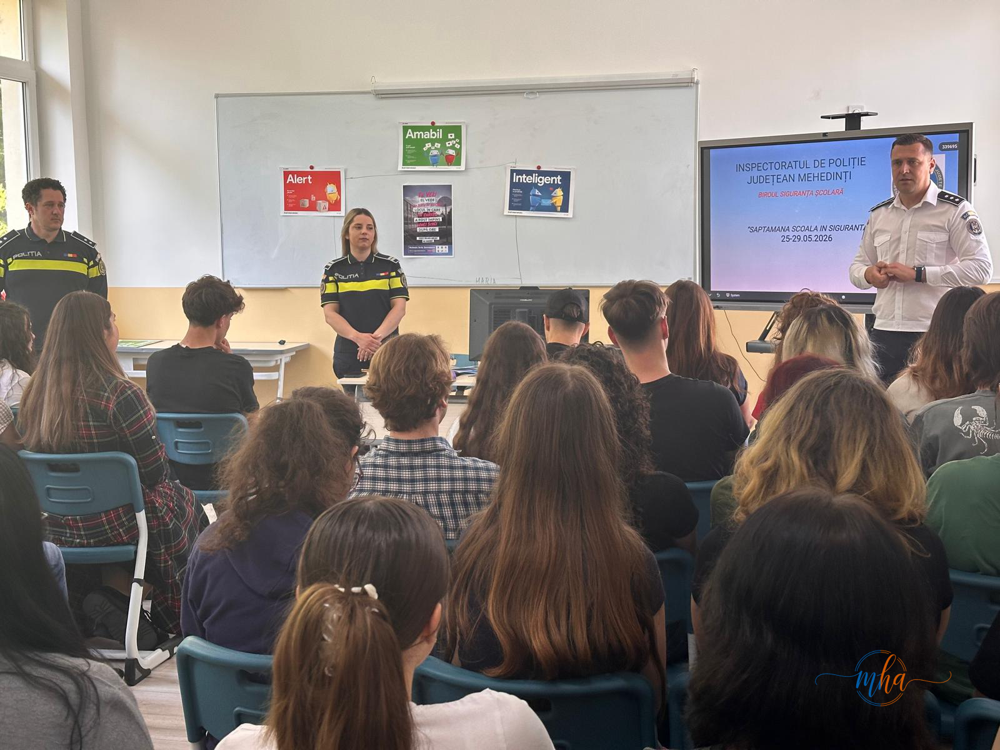
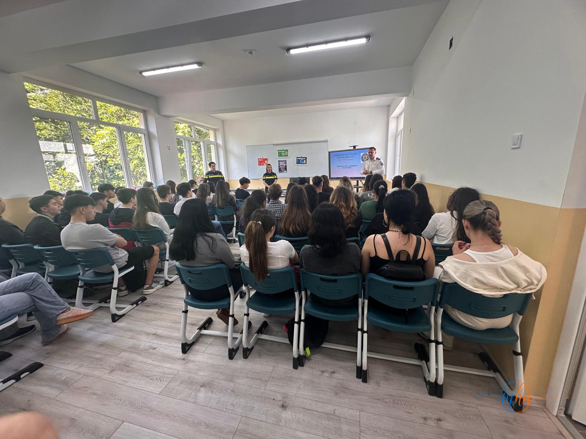

Luni, 25 mai 2026, polițiștii Biroului Siguranță Școlară din cadrul Inspectoratului de Poliție Județean Mehedinți au dat startul activităților desfășurate în cadrul campaniei naționale „Săptămâna Școală în Siguranță", inițiativă lansată la nivel național de Poliția Română prin Direcția Siguranța Școlară. Prima activitate din județ s-a desfășurat la Colegiul Național Traian din municipiul Drobeta-Turnu Severin, în fața unui auditoriu format din elevi și cadre didactice.
Un demers național pentru siguranța elevilor
Campania „Săptămâna Școală în Siguranță" este un demers național coordonat de Poliția Română și desfășurat simultan în toate județele țării, cu scopul de a crea un mediu educațional mai sigur și mai echilibrat pentru toți elevii. În județul Mehedinți, activitățile se vor desfășura pe parcursul întregii săptămâni, în mai multe unități de învățământ din municipiu și județ.
Pe parcursul acestei săptămâni, la nivelul județului Mehedinți vor acționa polițiști din mai multe structuri specializate ale IPJ, printre care:
🚔 Structuri IPJ Mehedinți implicate în campanie
- Biroul Siguranță Școlară — prevenire bullying și violență în școală
- Structura de Prevenire a Criminalității — informare despre consecințele juridice ale faptelor penale
- Structura de Ordine Publică — menținerea siguranței în și în jurul unităților școlare
- Serviciul Criminalistică — activități de educație juridică
- Poliția Rutieră — siguranța rutieră în proximitatea școlilor
Teme abordate: bullying, droguri, trafic de persoane
Scopul principal al acestor activități, organizate împreună cu reprezentanții unităților de învățământ, este creșterea gradului de informare a elevilor și a cadrelor didactice cu privire la fenomene cu impact major asupra siguranței școlare și sociale:


Bullyingul și violența școlară reprezintă una dintre principalele preocupări ale autorităților în mediul educațional. Polițiștii explică elevilor efectele psihologice și sociale ale acestor comportamente, dar și consecințele juridice pe care le pot atrage atât asupra agresorilor, cât și asupra celor care asistă pasiv la astfel de acte.
Referitor la traficul de droguri, activitățile vizează atât informarea despre riscurile consumului de substanțe interzise, cât și despre metodele prin care minorilor li se poate propune consumul sau implicarea în rețele de distribuție. Elevii sunt încurajați să raporteze orice tentativă de atragere în astfel de activități.
Traficul de persoane este un alt subiect abordat cu seriozitate în cadrul campaniei. Tinerii sunt informați despre metodele de recrutare folosite de traficanți, despre cum pot recunoaște o situație de risc și despre unde pot cere ajutor în mod confidențial.
„Prin acest demers, polițiștii Inspectoratului de Poliție Județean Mehedinți au încredere că elevii își vor canaliza energia, resursele și cunoștințele pentru a încheia cu succes anul școlar, fără evenimente nedorite." — IPJ Mehedinți
Colegiul Național Traian — prima locație din campanie
Colegiul Național Traian din Drobeta-Turnu Severin a fost prima unitate de învățământ vizitată în cadrul campaniei județene. Activitățile au beneficiat de participarea entuziastă a elevilor, care au interacționat direct cu polițiștii, adresând întrebări și implicându-se activ în discuții. Prezența ofițerilor din mai multe structuri specializate a oferit o perspectivă completă și echilibrată asupra temelor abordate.
Campania va continua pe parcursul săptămânii 25-29 mai 2026, în mai multe școli și licee din județul Mehedinți, cu activități adaptate vârstei și nivelului de înțelegere al elevilor. Polițiștii IPJ Mehedinți colaborează strâns cu directorii și cadrele didactice ale fiecărei unități de învățământ pentru a maximiza impactul mesajelor transmise.
Siguranța școlară — o responsabilitate comună
Campania „Săptămâna Școală în Siguranță" este o dovadă concretă că siguranța mediului educațional nu este responsabilitatea exclusivă a poliției sau a școlii, ci o responsabilitate împărțită între elevi, profesori, părinți și autorități. Prin informare, dialog deschis și raportarea situațiilor de risc, comunitatea școlară din Mehedinți poate contribui activ la prevenirea incidentelor și la crearea unui climat de respect și siguranță.
Elevii care se confruntă cu situații de bullying, violență, presiuni legate de droguri sau orice altă problemă de siguranță sunt îndemnați să apeleze la 112 — numărul de urgență, la consilierul școlar sau la coordonatorul pentru proiecte și programe educative din cadrul unității de învățământ.